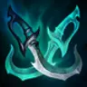
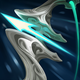

起手裝備
 長劍
長劍提高前期 Q 技與普攻傷害，直接銜接射手核心裝。

Caitlyn · 超遠程消耗／陷阱控場型射手
凱特琳在 ARAM 就是把射程優勢用到底：安全點最近的人、用 Q 技磨血，陷阱封住草叢與前排腳下。只要不被強開，她能一直保持很高的輸出壓力。
本站當時評級理由：7.2d 提高爆頭成長並縮短陷阱充能，長直線消耗、推塔與陣地控制同步提升。
標準 ARAM 先依本站現行資料採通用基準；不沿用早期版本曾出現的特殊修正數值。
提高前期 Q 技與普攻傷害，直接銜接射手核心裝。

超長射程配充能普攻很容易安全摸到後排。

放大爆頭與暴擊傷害，是中期核心輸出。

兼具重創與穿甲，ARAM 泛用性很高。

對高護甲前排補足後期輸出。

增加續航與護盾，讓遠程消耗後更容易維持血線。

前期攻速提升普攻與爆頭累積節奏。

升級三級鞋後補攻速、吸血與走砍能力。

長團戰容易疊滿攻速並取得額外射程，和凱特琳射程優勢相乘。

前期普攻與技能換血更有壓力。

多數時間會先打高血量前排，增傷穩定。

補吸血續航，適合 ARAM 無法回城環境。

被突進時提高第一波容錯。

保命與重新拉開射程的核心。

長團戰方便持續保持射程差與追擊。
1 技 > 2 技 > 3 技
ARAM 開局三個基礎技能各點 1 級，之後主升 1 技、次升 2 技；大絕能點就點。
利用普攻射程與 Q 技慢慢壓血，陷阱放在草叢入口、己方控制技能附近與前排退路，別全堆同一個地方。
磁性雷射槍與無盡成形後，優先點最近且安全的目標。有人踩陷阱時再補爆頭，不要為了一個後排位置走太前。
後期站位比輸出更重要。保持最遠射程，大絕用來收殘血或逼對手替隊友擋槍，陷阱持續封住主要通道。
 殞落王者之劍
殞落王者之劍需要更強對坦持續輸出時加入。

幻影之舞面對貼臉陣容時提高走砍手感。

狂風之力面對強開陣時用主動位移換安全。
獨立歷史資料：7.2b 分類評級。7.3a 僅有部分增幅公告欄位校正，英雄分類適配與出裝未因此全面重評；不套用到標準 ARAM。
看遊戲卡片下方分類 → 點相同分類 → 看左側 S+／S／A。
長射程與爆頭讓高頻普攻增幅能安全穩定觸發。
標準出裝本就依賴暴擊，暴擊增幅能直接提高爆頭與收割能力。
攻速、射程與暴擊連動能把凱特琳的距離優勢放大。
部分英雄系卡可增加攻擊距離或提供高頻普攻強化，和凱特琳很契合。
一技能、陷阱與大絕都能利用部分遠距技能增幅。
三技能具有位移，位移類增幅能提高被切時的自保與反打。
7.2b ARAM S 第一批：凱特琳以射程、陷阱控場與遠距收割整理；鞋子遵循 7.2 三級鞋系統。｜v93 7.2d 標準 ARAM 全量校正：已複核 Tier、標準 ARAM 模式修正、7.2c／7.2d 英雄與道具、現行符文名稱及雪球戰車；無額外異動者沿用已驗證配置。